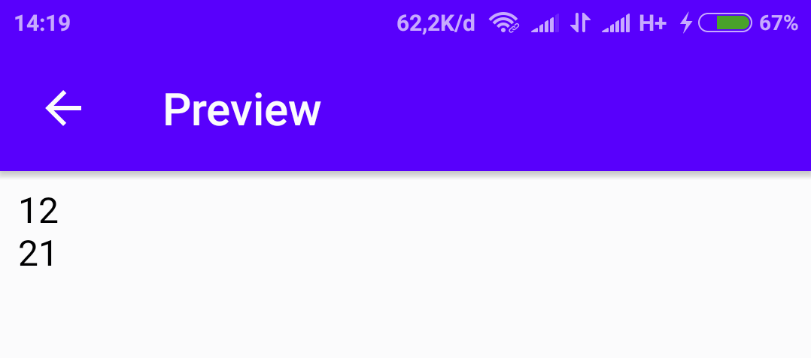
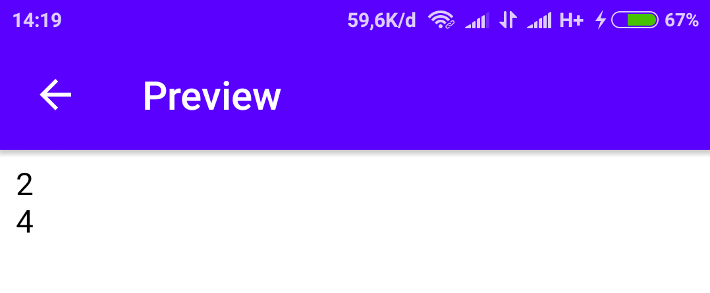
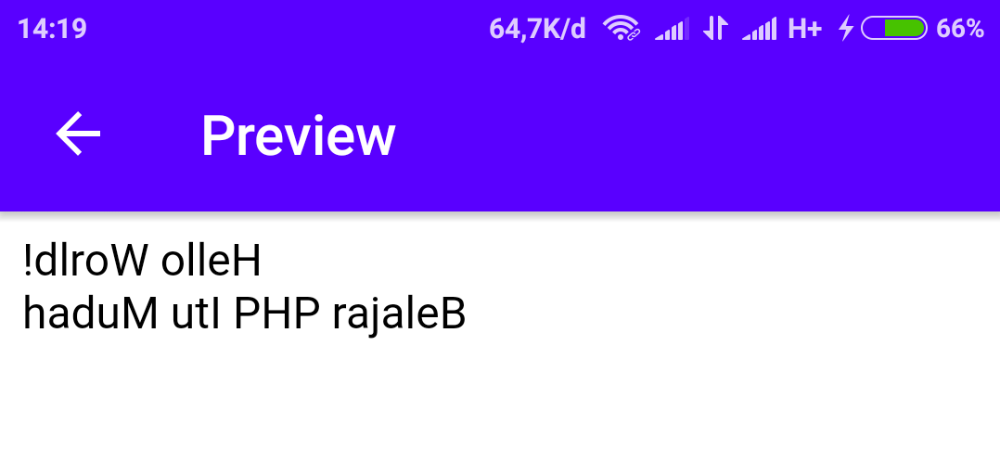
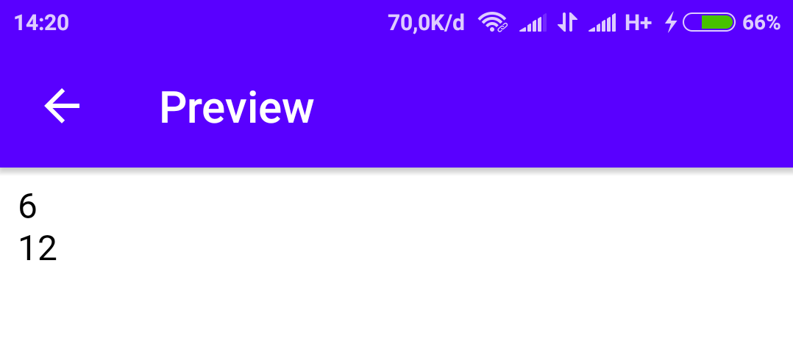
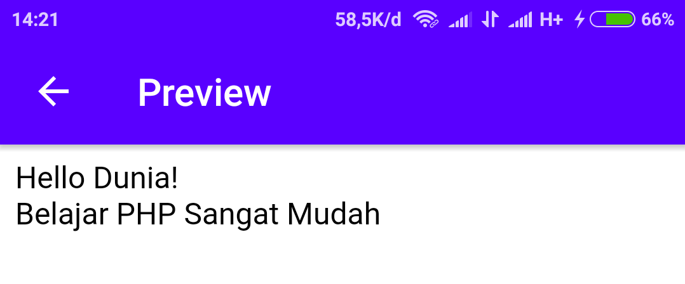

Menghitung Panjang String
Untuk menghitung panjang string bisa kita gunakan strlen.
Contoh:
<?php
echo strlen("Hello World!")."<br>";
echo strlen("Belajar PHP Itu Mudah");
?>
Hasilnya:

Menghitung Jumlah Kata
Untuk menghitung jumlah kata pada suatu kalimat bisa kita gunakan str_word_count.
Contoh:
<?php
echo str_word_count("Hello World!")."<br>";
echo str_word_count("Belajar PHP Itu Mudah");
?>
Hasilnya:

Membalik Kata
Dalam PHP kita bisa membalik kata cukup dengan memanggil perintah strrev.
Contoh:
<?php
echo strrev("Hello World!")."<br>";
echo strrev("Belajar PHP Itu Mudah");
?>
Hasilnya:

Mencari Posisi Kata
Mencari kata dengan PHP bisa kita gunakan strpos.
Contoh:
<?php
echo strpos("Hello World!", "World")."<br>";
echo strpos("Belajar PHP Itu Mudah", "Itu");
?>
Hasilnya:

Keterangan:
Karakter pertama terhitung dari 0.
Replace Text
Mengganti text dalam string dengan str_replace.
Contoh:
<?php
echo str_replace("World", "Dunia", "Hello World!")."<br>";
echo str_replace("Itu", "Sangat", "Belajar PHP Itu Mudah");
?>
Hasilnya:
